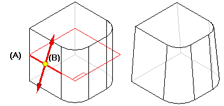
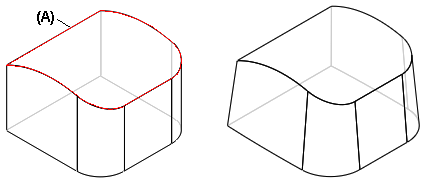
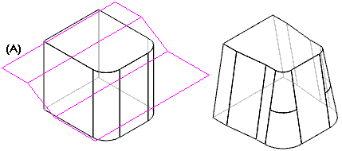
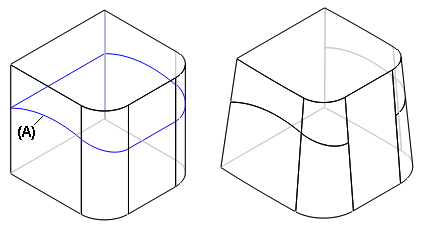
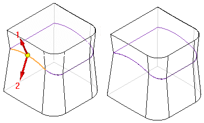
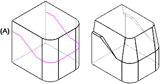
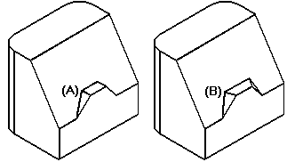

Example: Draft Options
The following options are available from the Draft Options dialog box .
From plane: You can select a reference plane or planar face to use as the draft plane (A), and then use the same plane to define the pivot location (B). The size of the part at the pivot location is unchanged and material is added or removed to construct the draft feature. In this example, since the draft plane is located in the approximate center of the part, material is removed above the pivot location, and material is added below the pivot location to construct the feature.

From edge: You can select one or more edges on the part to define the pivot location. When you use the From Edge option, you can only add draft to faces that are adjacent to the selected edges.

From parting surface: You can select a construction surface (A) to define the pivot location.

From parting line: You can select a parting line (A) to create the draft.

Split draft: You can draft the part in two directions at once with the split draft option. In ordered, you can apply two draft angles at once with the split draft option.

Step draft: Using the parting curve shown in the illustration, you can apply a step draft. The Step Draft option adds a step where needed to keep the drafted faces intact.

With the perpendicular option, the step faces are created perpendicular to the draft face (A). With the taper option, the step faces are created tapered to the draft face (B).

How do I
Add a draft angle to a partExamples: Constructing drafts to different sides
Examples: Selecting draft faces with the chain method
Examples: Selecting draft faces with the loop sides method
Learn more
Adding draft to partsWorkflow overview
Editing add draft features
Defining the draft plane
Using parting geometry
Split draft
Step draft
Things to consider with rounds and draft angles
Look up more details
Add Draft commandAdd Draft command bar
Add Draft command bar
Add Draft command bar
Draft Options dialog box
Draft Parameters dialog box